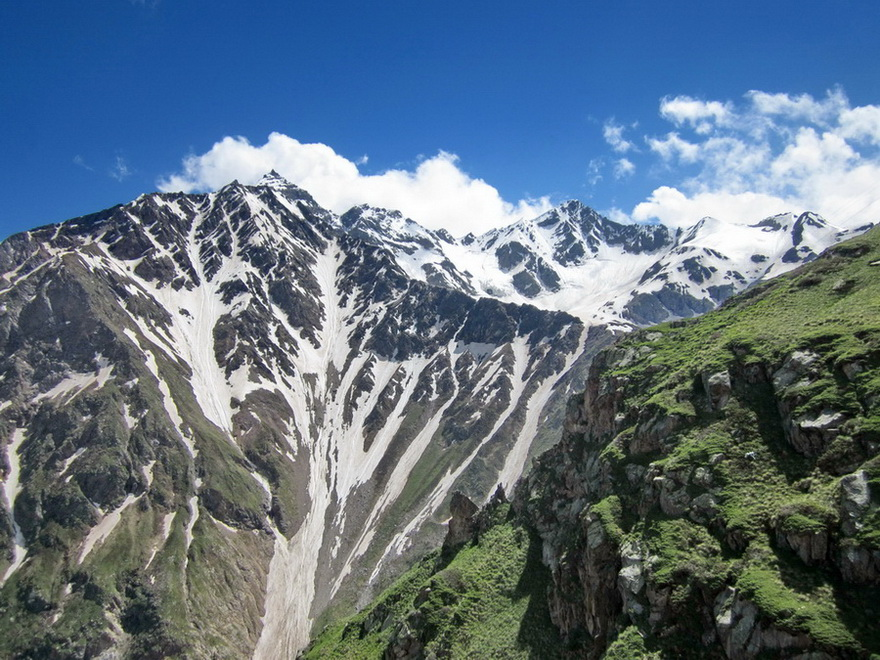
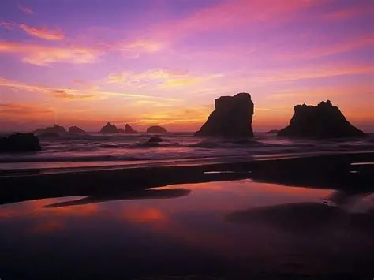

Горы — одни из самых впечатляющих творений природы. Высокие пики, укрытые снежными шапками, кристально чистые озера и бескрайние леса дарят ощущение свободы и вдохновения. Путешествие в горы помогает отключиться от городской суеты, наполняет энергией и дарит незабываемые виды.
Альпийские луга, стремительные реки и уникальная фауна делают горные регионы идеальными для треккинга, фотографии и медитации на высоте. Даже просто глядя на этот пейзаж, чувствуешь, как дыхание становится глубже. Согласно исследованиям, пребывание в горной местности снижает уровень стресса на 35% и улучшает общее самочувствие.

Морской бриз, бескрайняя гладь воды и закатное солнце, окрашивающее небо в розовые и золотые тона — океан обладает удивительной способностью успокаивать и восстанавливать душевное равновесие. Звуки прибоя и запах соли дарят ощущение вечности и гармонии.
Пляжный отдых — это не только лежание на песке. Прогулки по берегу, наблюдение за волнами, занятия серфингом или просто созерцание стихии помогают перезагрузить мысли. Исследования показывают, что синий цвет воды и ритмичный шум прибоя снижают уровень кортизола, улучшают настроение и даже творческие способности.